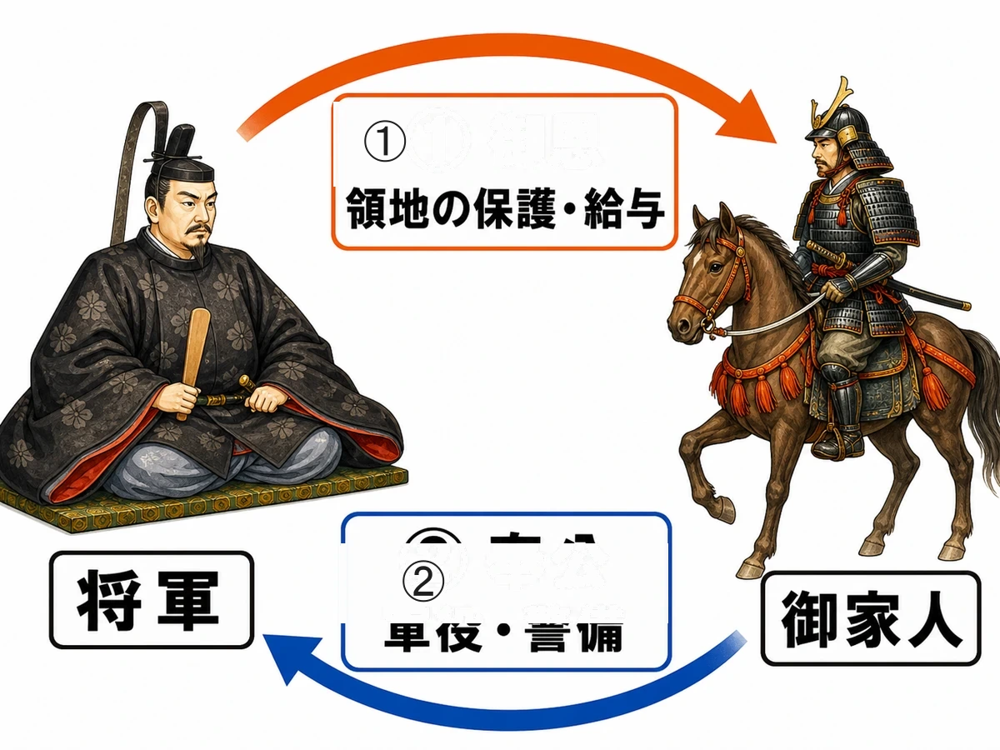
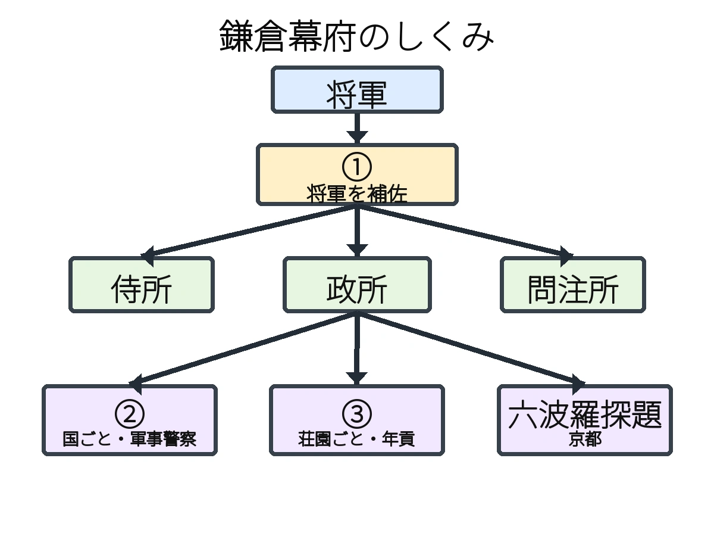

歴史 ⑤問題集
武士と鎌倉幕府
平安時代末期 〜 鎌倉時代
いっしょに
がんばろう！
がんばろう！
年
年表でチェック
（ ）をタップすると答えが出るよ。まずは自分で言ってから確かめよう！
| 年代 | できごと |
|---|---|
| 10世紀ごろ | 地方の治安の乱れの中でが成長する |
| 935年ごろ | 関東でが反乱を起こす |
| 939年ごろ | 瀬戸内海でが反乱を起こす |
| 11世紀後半 | 前九年合戦・後三年合戦でが活躍する |
| 11世紀後半 | 東北でが平泉を拠点に栄え始める |
| 11世紀後半 | 白河上皇がを始める |
| 1156年 | が起こる |
| 1159年 | で平清盛が源義朝を破る |
| 1167年 | が武士として初めて太政大臣となる |
| 1185年 | で平氏がほろびる |
| 12世紀末 | 源頼朝がに任命され鎌倉幕府を開く |
| 1221年 | が起こり幕府が勝利する |
| 1232年 | 北条泰時がを定める |
| 鎌倉時代 | が念仏を唱える浄土宗を開く |
| 鎌倉時代 | 運慶・快慶らが東大寺南大門にをつくる |
1
武士の成長
▶やり方をえらぼう目次にもどれば何度でも変えられるよ
解答
順番
順番
A要点まとめ（ ）をタップして確かめよう
先に参考書で理解する
10世紀ごろ、地方の治安の乱れを背景に、弓矢や馬の技にすぐれた者たちがとして成長した。武士は一族と家来を血縁と主従関係で結んだ軍事組織であるをつくった。天皇の子孫であるは東日本を、は西日本を中心に勢力を広げていった。935年ごろ関東でが反乱を起こし、ほぼ同時期に瀬戸内海ではが反乱を起こした。11世紀後半には前九年合戦・後三年合戦でが活躍し、東日本の武士の信頼を集めた。同じころ東北地方ではが平泉を拠点に約100年にわたって栄えた。また、地方の開発領主が有力な貴族に土地を差し出したことで、税を免除された私有地であるが各地に広がっていった。
▶ここからは一問一答答え合わせのやり方をえらぼう
B一問一答1 / 14
弓矢や馬の技術にすぐれ、10世紀ごろに成長した者を何という？
解説を読む（ヒント）
武士
地方の有力者や農民が武器を持ち10世紀ごろから成長した人々。治安の乱れの中で弓馬の技を磨いて力をつけた。
B一問一答6 / 14
前九年合戦・後三年合戦で活躍し、東日本に勢力を広げた人物は？
解説を読む（ヒント）
源義家
11世紀後半の前九年合戦・後三年合戦で活躍し、東北の戦乱をしずめて東日本の武士の信頼を得た源氏の武将。
B一問一答7 / 14
東北地方の平泉を拠点に約100年さかえた一族は？
解説を読む（ヒント）
奥州藤原氏
11世紀後半から平泉を拠点に約100年栄えた一族。金や馬の交易で富を築き、中尊寺金色堂を建てた。
B一問一答9 / 14
939年ごろ、瀬戸内海で反乱を起こしたのはだれ？
解説を読む（ヒント）
藤原純友
939年ごろ、平将門の乱とほぼ同時期に瀬戸内海で海賊を率いて反乱を起こした人物。武士の力が現れた事件。
B一問一答10 / 14
11世紀後半に東北地方で起こった二つの戦乱は？
解説を読む（ヒント）
前九年合戦・後三年合戦
11世紀後半に東北で起きた二つの戦乱。源義家が活躍し、源氏が東日本の武士の信頼を得るきっかけとなった。
B一問一答13 / 14
奥州藤原氏が建て、金箔でかざられた平泉の建物は？
解説を読む（ヒント）
中尊寺金色堂
奥州藤原氏が平泉に建てた、全体を金箔でおおった豪華な仏堂。一族の栄えた様子を今に伝える世界遺産。
B一問一答14 / 14
荘園の税をまぬがれることができる権利を何という？
解説を読む（ヒント）
不輸の権
荘園にかかる税が免除される権利。有力な貴族が朝廷から認められた特権で、荘園が広がる大きな理由となった。
D記述問題1 / 2 文章で説明しよう
10世紀ごろ、地方で武士が成長した背景を説明しなさい。
指定語句 弓矢農民
解説を読む（ヒント）
地方の治安が乱れる中で、弓矢や馬の技にすぐれた地方の有力者や農民が武器を持ち、力をつけていったから。
D記述問題2 / 2 文章で説明しよう
荘園はどのようにして各地に広がっていったか、そのしくみを説明しなさい。
指定語句 寄進
解説を読む（ヒント）
地方の開発領主が税をのがれるため、開墾した土地を有力な貴族に寄進し、現地の管理は続けながら荘園が広まっていった。
2
院政と平氏の政治
▶やり方をえらぼう目次にもどれば何度でも変えられるよ
解答
順番
順番
A要点まとめ（ ）をタップして確かめよう
先に参考書で理解する
11世紀後半、白河上皇は藤原氏の摂関政治に代わって自ら政治を動かすを始め、院の警備にはを置いた。1156年、崇徳上皇と後白河天皇の対立からが起こり、源氏・平氏の武士が動員されて武士の地位が高まった。1159年のでが源義朝を破ると、平氏は武士の頂点に立った。1167年、清盛は武士として初めてとなり、大輪田泊を整備してを進め大きな利益を得た。しかし平氏の勢力独占は「平氏にあらずんば人にあらず」といわれるほどの反発を招いた。伊豆で挙兵したは弟の源義経らを率い、1185年ので平氏をほろぼした。
▶ここからは一問一答答え合わせのやり方をえらぼう
B一問一答4 / 14
白河上皇が院の警備のために置いた武士を何という？
解説を読む（ヒント）
北面の武士
院の北側を守った武士で、白河上皇が置いた。上皇直属の家来として武士が中央政治で活躍するきっかけとなった。
B一問一答5 / 14
1156年、崇徳上皇と後白河天皇の対立から起こった内乱は？
解説を読む（ヒント）
保元の乱
1156年、天皇家や藤原氏の内輪もめに源氏・平氏が動員されて起きた争い。武士の地位が大きく高まる出来事となった。
B一問一答6 / 14
1159年、清盛と義朝が戦った内乱は？
解説を読む（ヒント）
平治の乱
1159年、保元の乱の後に平清盛が源義朝を破った争い。平氏が武士の頂点に立ち、清盛が政治を動かすようになった。
B一問一答7 / 14
武士として初めて太政大臣になったのはだれ？
解説を読む（ヒント）
平清盛
保元・平治の乱に勝利し、1167年に武士初の太政大臣となって平氏の全盛期を築いた。大輪田泊を整備して日宋貿易も進めた。
B一問一答8 / 14
平清盛が1167年に就任した、武士初の最高の官職は？
解説を読む（ヒント）
太政大臣
朝廷の最高位の役職で、もとは貴族だけが就いた。1167年に平清盛が武士として初めてこの地位についた。
B一問一答11 / 14
鎌倉を本拠地に平氏打倒のため挙兵した人物は？
解説を読む（ヒント）
源頼朝
平治の乱で敗れた源義朝の子。伊豆に流された後に挙兵し、弟の義経らを率いて平氏をほろぼし、のちに鎌倉幕府を開いた。
B一問一答12 / 14
源頼朝の弟で、壇ノ浦の戦いで平氏を破った人物は？
解説を読む（ヒント）
源義経
源頼朝の弟。一ノ谷・屋島・壇ノ浦と各地で平氏を破る軍事的才能を発揮したが、後に頼朝と対立し奥州で命を落とした。
B一問一答13 / 14
1185年、平氏が源氏に敗れてほろんだ戦いは？
解説を読む（ヒント）
壇ノ浦の戦い
1185年、現在の山口県下関市で行われた海戦。源義経率いる源氏軍に敗れて平氏一門が滅亡し、源平の争乱が終結した。
B一問一答14 / 14
平清盛が航海の安全を祈り、整備した広島県の神社は？
解説を読む（ヒント）
厳島神社
広島県の宮島にあり、瀬戸内海の海上交通を重視した平清盛が一族の繁栄を祈り整備した。現在は世界遺産に登録されている。
D記述問題1 / 2 文章で説明しよう
白河上皇が院政を始めた目的を説明しなさい。
指定語句 摂関政治
解説を読む（ヒント）
藤原氏による摂関政治に代わって、上皇自らが政治を動かす院政を始め、実権をにぎり続けるため。
D記述問題2 / 2 文章で説明しよう
平氏の政治が「平氏にあらずんば人にあらず」と言われるほど反発を招いたのはなぜか、説明しなさい。
指定語句 独占
解説を読む（ヒント）
平氏が朝廷の重要な役職や全国の荘園などの領地を一族で独占し、他の貴族や武士の不満を招いたから。
3
鎌倉幕府の成立
▶やり方をえらぼう目次にもどれば何度でも変えられるよ
解答
順番
順番
A要点まとめ（ ）をタップして確かめよう
先に参考書で理解する
源頼朝は平氏をほろぼした後、に任命されて鎌倉に武士の政権である鎌倉幕府を開いた。頼朝は国ごとに軍事・警察を担うを、荘園や公領ごとに年貢の取り立てなどを行うを置いて全国支配を固めた。将軍と主従関係を結んだ武士はと呼ばれ、将軍が領地を保護するに対し軍役や警護をつとめるで応じる関係が幕府の基礎となった。頼朝の死後は北条氏がとして実権をにぎり、1221年には後鳥羽上皇が幕府をたおそうとしたが起こったが、御家人の団結によって幕府側が勝利した。その後京都には朝廷を監視するが置かれ、1232年には北条泰時が武士の慣習に基づく法であるを定めた。
▶ここからは一問一答答え合わせのやり方をえらぼう
B一問一答2 / 14
鎌倉幕府を開き、征夷大将軍に任命された人物は？
解説を読む（ヒント）
源頼朝
平治の乱で敗れて伊豆に流されたが挙兵し、弟の義経らと平氏を滅ぼした後、鎌倉を本拠地に武士の政権を開いた人物。
B一問一答3 / 14
1185年に源氏が平氏をほろぼした戦いは？
解説を読む（ヒント）
壇ノ浦の戦い
1185年、山口県下関市の壇ノ浦で源義経率いる源氏軍と平氏が戦った海戦。平氏一門が滅亡し源平の争乱が終結した。
B一問一答4 / 14
鎌倉幕府が国ごとに置き、軍事や警察の仕事をさせた役職は？
解説を読む（ヒント）
守護
国ごとに置かれ治安を守る役。地頭とともに幕府の全国支配を支え、御家人をまとめる役目も果たした。
B一問一答5 / 14
鎌倉幕府が荘園や公領ごとに置き、年貢の取り立てなどを行った役職は？
解説を読む（ヒント）
地頭
荘園や公領ごとに置かれ、年貢の取り立てや土地の管理を行った役。武力を持ち、荘園領主と争うことも増えた。
B一問一答7 / 14
将軍が御家人の領地を認めたり、新たな土地をあたえたりすることは？
解説を読む（ヒント）
御恩
将軍が御家人に与える恩。先祖から伝わる領地を認めることや、新しい土地を与えることを指す。
B一問一答10 / 14
源頼朝が朝廷から任命された、武家の最高位を示す役職は？
解説を読む（ヒント）
征夷大将軍
もとは蝦夷を討つ軍の総大将の役職。源頼朝のあとは武士のかしらを意味し、幕府の将軍の称号となった。
D記述問題1 / 3 文章で説明しよう
将軍と御家人を結びつけた御恩と奉公の関係のしくみを説明しなさい。
指定語句 御恩奉公
解説を読む（ヒント）
将軍が御家人の領地を保護したり新しい土地を与えたりする御恩に対し、御家人は軍役や警護をつとめる奉公で応じる関係。
D記述問題2 / 3 文章で説明しよう
承久の乱のあと、幕府が京都に六波羅探題を置いた目的を説明しなさい。
指定語句 承久の乱
解説を読む（ヒント）
承久の乱に勝利した幕府が、京都の朝廷の動きを監視し、幕府の支配を西日本にも広げるために置いた。
D記述問題3 / 3 文章で説明しよう
源頼朝は、国ごとと荘園・公領ごとにそれぞれどのような役職を置いたか、説明しなさい。
指定語句 守護地頭
解説を読む（ヒント）
国ごとに軍事や警察を担当する守護を置き、荘園や公領ごとに年貢の取り立てや土地の管理を行う地頭を置いた。
E資料問題写真を見て答えよう

(1)図中の①の、将軍が御家人の領地を守ったり与えたりすることを何というか。
(2)図中の②の、御家人が将軍のために戦いや警備に参加することを何というか。
E資料問題写真を見て答えよう

(3)図中の①は、将軍を補佐して政治を行った役職である。①にあてはまる役職を答えなさい。
(4)図中の②は、国ごとに置かれ、軍事・警察を担当した役職である。②にあてはまる役職を答えなさい。
(5)図中の③は、荘園や公領ごとに置かれ、年貢の取り立てなどを行った役職である。③にあてはまる役職を答えなさい。
4
鎌倉時代の社会
▶やり方をえらぼう目次にもどれば何度でも変えられるよ
解答
順番
順番
A要点まとめ（ ）をタップして確かめよう
先に参考書で理解する
鎌倉時代には農業技術が進み、同じ田で米と麦を交互に作るが西日本を中心に広まり、や牛馬耕、草木灰などの肥料の利用で収穫量が高まった。商業も発達し、寺社の門前などで月3回開かれる（三斎市）が各地に広がり、日宋貿易で入ってきたが売買や年貢の支払いに使われる貨幣経済が進んだ。地頭が荘園で力を強めると荘園領主との争いが増え、土地を半分ずつ分け合うで解決することもあった。武士は名誉を重んじ恥をきらうの心がまえを持ち、弓や馬の技を磨くを何より大切にし、一大事には「」と将軍のもとへ駆けつける覚悟を持っていた。
▶ここからは一問一答答え合わせのやり方をえらぼう
B一問一答2 / 14
寺社の門前や交通の便利な場所で、決まった日に開かれた市場は？
解説を読む（ヒント）
定期市
寺社の門前や交通の要所で月3回開かれた三斎市が代表例。宋銭の広まりとともに商業の発展を支えた。
B一問一答4 / 14
中国の宋から入ってきた銭で、鎌倉時代に商業や年貢の支払いに使われたお金は？
解説を読む（ヒント）
宋銭
平清盛の日宋貿易で大量に入った中国の銭。年貢の支払いにも使われ、お金中心の経済を広めた。
B一問一答6 / 14
鎌倉時代に普及した、耕作効率を大幅に上げた道具は？
解説を読む（ヒント）
鉄製農具
鎌倉時代に各地に広まった農具。木や石より硬くて丈夫で、深く耕せたため農業の収穫量を大きく高めた。
B一問一答8 / 14
草木を焼いた灰で、鎌倉時代に肥料として使われたのは？
解説を読む（ヒント）
草木灰
草木を焼いて作った灰を田畑にまく肥料。鎌倉時代に広く使われ、二毛作とともに農業の収穫量を高めた。
B一問一答11 / 14
鎌倉時代の武士が重んじた、弓術や馬術などの武芸を中心とする考え方は？
解説を読む（ヒント）
弓馬の道
鎌倉時代の武士が大切にした考え方。弓と馬の技を磨くことが武士のもっとも大切なつとめとされた。
B一問一答12 / 14
地頭と荘園領主が土地を半分ずつ分けることを何という？
解説を読む（ヒント）
下地中分
地頭と荘園領主の土地争いが裁判でも決着しないとき、土地を半分ずつ分けて支配した取り決め。
B一問一答13 / 14
宋銭の流通で物々交換から変化した、お金を使う経済のしくみは？
解説を読む（ヒント）
貨幣経済
日宋貿易で入った宋銭の広まりにより、物々交換に代わってお金で品物を売り買いする仕組みが広がった。
B一問一答14 / 14
鎌倉幕府で地頭と荘園領主の争いなどを裁判で扱った機関は？
解説を読む（ヒント）
問注所
鎌倉幕府で裁判を担当した役所。御家人どうしの争いや、地頭と荘園領主の土地争いを裁いた。
D記述問題1 / 2 文章で説明しよう
鎌倉時代に農業の収穫量が高まった理由を説明しなさい。
指定語句 二毛作
解説を読む（ヒント）
米と麦を交互に作る二毛作が広まり、鉄製農具や牛馬耕、草木灰などの肥料の利用も進んで収穫量が高まったから。
D記述問題2 / 2 文章で説明しよう
地頭と荘園領主の土地争いが下地中分によってどのように解決されたか、説明しなさい。
指定語句 下地中分
解説を読む（ヒント）
地頭が荘園で力を強めて荘園領主との争いが増えたため、土地を半分ずつ分け合う下地中分で解決することもあった。
5
鎌倉文化と新しい仏教
▶やり方をえらぼう目次にもどれば何度でも変えられるよ
解答
順番
順番
A要点まとめ（ ）をタップして確かめよう
先に参考書で理解する
鎌倉時代には力強く写実的な文化が生まれ、東大寺南大門には運慶・快慶らが手がけたが置かれた。文学では、源平の争乱をえがき琵琶法師が語り伝えた軍記物語の、鴨長明が世のはかなさを記した随筆、兼好法師が人々の暮らしをつづった随筆が生まれ、後鳥羽上皇の命で藤原定家らがを編集した。仏教では、念仏を唱えれば救われると説いたが浄土宗を開き、その弟子は浄土真宗を、一遍は踊念仏を広めて時宗を開いた。日蓮は法華経の題目を唱えるを、栄西は宋から伝えたを、道元はひたすら座禅を行うを開いた。
▶ここからは一問一答答え合わせのやり方をえらぼう
B一問一答2 / 14
東大寺南大門にある、運慶・快慶らが作った力強い彫刻は？
解説を読む（ヒント）
金剛力士像
運慶・快慶らが作った二体一対の木の彫刻。本物そっくりで筋肉の表現が力強く、鎌倉文化を代表する作品。
B一問一答5 / 14
平家物語を琵琶の伴奏で各地に語り歩いた芸能者は？
解説を読む（ヒント）
琵琶法師
琵琶の音に合わせて平家物語を語り歩いた、目の見えない僧の姿の人々。文字が読めない人にも物語を届けた。
B一問一答11 / 14
「南無阿弥陀仏」と念仏を唱えれば救われると説いた浄土宗の開祖は？
解説を読む（ヒント）
法然
比叡山で修行した僧で、浄土宗を開いた人物。念仏を唱えるだけで救われるという分かりやすい教えで広まった。
B一問一答12 / 14
法然の弟子で、阿弥陀如来を信じる浄土真宗を開いたのは？
解説を読む（ヒント）
親鸞
法然の弟子で浄土真宗を開いた人物。阿弥陀仏を信じれば悪人でも救われるという「悪人正機」を説いた。
B一問一答14 / 14
法華経の題目「南無妙法蓮華経」を唱えて救われると説いたのは？
解説を読む（ヒント）
日蓮
日蓮宗を開いた僧。法華経だけが正しい教えだと主張し、他の宗派を批判して幕府からも何度も罰された。
D記述問題1 / 3 文章で説明しよう
法然と親鸞の教えの違いを説明しなさい。
指定語句 浄土宗浄土真宗
解説を読む（ヒント）
法然は念仏を唱えれば誰でも救われると説いて浄土宗を開き、弟子の親鸞は悪人正機を説いて浄土真宗を開いた。
D記述問題2 / 3 文章で説明しよう
平家物語が文字を読めない人々にも広く伝わったのはなぜか、説明しなさい。
指定語句 琵琶法師
解説を読む（ヒント）
琵琶法師が琵琶の伴奏に合わせて平家物語を各地で語り歩き、文字が読めない人々にも物語を伝えたから。
D記述問題3 / 3 文章で説明しよう
金剛力士像は運慶・快慶らによってつくられた。この像に見られる鎌倉文化の特色を説明しなさい。
指定語句 写実的武士
解説を読む（ヒント）
金剛力士像は、写実的で力強く表現されており、武士の気風を反映した鎌倉文化の特色がよく表れている。
解答
年表でチェック
武士 平将門 藤原純友 源義家 奥州藤原氏 院政 保元の乱 平治の乱 平清盛 壇ノ浦の戦い 征夷大将軍 承久の乱 御成敗式目 法然 金剛力士像
1 武士の成長
A 要点まとめ① 武士 ② 武士団 ③ 源氏 ④ 平氏 ⑤ 平将門 ⑥ 藤原純友 ⑦ 源義家 ⑧ 奥州藤原氏 ⑨ 荘園
B 一問一答(1) 武士 (2) 武士団 (3) 惣領 (4) 源氏 (5) 平氏 (6) 源義家 (7) 奥州藤原氏 (8) 平将門 (9) 藤原純友 (10) 前九年合戦・後三年合戦 (11) 荘園 (12) 公領 (13) 中尊寺金色堂 (14) 不輸の権
C 実戦問題(1) ア（血縁関係と主従関係） (2) ア（天皇の子孫） (3) ウ（瀬戸内海の海賊） (4) ウ（税を納めず役人の介入も受けない） (5) イ（岩手県） (6) エ（10世紀） (7) エ（新皇） (8) ウ（東北地方）
D 記述問題
(1) 地方の治安が乱れる中で、弓矢や馬の技にすぐれた地方の有力者や農民が武器を持ち、力をつけていったから。
(2) 地方の開発領主が税をのがれるため、開墾した土地を有力な貴族に寄進し、現地の管理は続けながら荘園が広まっていった。
2 院政と平氏の政治
A 要点まとめ① 院政 ② 北面の武士 ③ 保元の乱 ④ 平治の乱 ⑤ 平清盛 ⑥ 太政大臣 ⑦ 日宋貿易 ⑧ 源頼朝 ⑨ 壇ノ浦の戦い
B 一問一答(1) 上皇 (2) 院政 (3) 白河上皇 (4) 北面の武士 (5) 保元の乱 (6) 平治の乱 (7) 平清盛 (8) 太政大臣 (9) 大輪田泊 (10) 日宋貿易 (11) 源頼朝 (12) 源義経 (13) 壇ノ浦の戦い (14) 厳島神社
C 実戦問題(1) イ（平治の乱） (2) ア（娘を天皇のきさきにし一族を要職に就けた） (3) イ（源義経） (4) イ（宋銭と陶磁器） (5) ウ（日宋貿易の利益） (6) ウ（厳島神社） (7) ウ（保元の乱） (8) エ（院政開始→保元の乱→平治の乱→壇ノ浦の戦い）
D 記述問題
(1) 藤原氏による摂関政治に代わって、上皇自らが政治を動かす院政を始め、実権をにぎり続けるため。
(2) 平氏が朝廷の重要な役職や全国の荘園などの領地を一族で独占し、他の貴族や武士の不満を招いたから。
3 鎌倉幕府の成立
A 要点まとめ① 征夷大将軍 ② 守護 ③ 地頭 ④ 御家人 ⑤ 御恩 ⑥ 奉公 ⑦ 執権 ⑧ 承久の乱 ⑨ 六波羅探題 ⑩ 御成敗式目
B 一問一答(1) 鎌倉幕府 (2) 源頼朝 (3) 壇ノ浦の戦い (4) 守護 (5) 地頭 (6) 御家人 (7) 御恩 (8) 奉公 (9) 御恩と奉公 (10) 征夷大将軍 (11) 侍所 (12) 政所 (13) 問注所 (14) 執権
C 実戦問題(1) ウ（問注所） (2) ア（武士の慣習に基づいた裁判の基準） (3) エ（戦時の参戦と京都・鎌倉の警護） (4) エ（隠岐） (5) ア（封建制度） (6) ア（守護は国ごとで軍事・警察、地頭は荘園ごとで年貢徴収） (7) エ（幕府の優位が確立し支配が広がった） (8) イ（北条時政）
D 記述問題
(1) 将軍が御家人の領地を保護したり新しい土地を与えたりする御恩に対し、御家人は軍役や警護をつとめる奉公で応じる関係。
(2) 承久の乱に勝利した幕府が、京都の朝廷の動きを監視し、幕府の支配を西日本にも広げるために置いた。
(3) 国ごとに軍事や警察を担当する守護を置き、荘園や公領ごとに年貢の取り立てや土地の管理を行う地頭を置いた。
E 資料問題(1) 御恩 (2) 奉公 (3) 執権 (4) 守護 (5) 地頭
4 鎌倉時代の社会
A 要点まとめ① 二毛作 ② 鉄製農具 ③ 定期市 ④ 宋銭 ⑤ 下地中分 ⑥ 武士道 ⑦ 弓馬の道 ⑧ いざ鎌倉
B 一問一答(1) 二毛作 (2) 定期市 (3) 三斎市 (4) 宋銭 (5) 年貢 (6) 鉄製農具 (7) 牛馬耕 (8) 草木灰 (9) 馬借 (10) 武士道 (11) 弓馬の道 (12) 下地中分 (13) 貨幣経済 (14) 問注所
C 実戦問題(1) ウ（宋銭の流通や定期市の発達） (2) ア（米と麦） (3) イ（西日本） (4) エ（草木灰） (5) ウ（武力を持ち年貢徴収を行ったため） (6) エ（二毛作・定期市・御恩と奉公） (7) イ（月に3回） (8) イ（武芸を重んじ戦いに備えたため）
D 記述問題
(1) 米と麦を交互に作る二毛作が広まり、鉄製農具や牛馬耕、草木灰などの肥料の利用も進んで収穫量が高まったから。
(2) 地頭が荘園で力を強めて荘園領主との争いが増えたため、土地を半分ずつ分け合う下地中分で解決することもあった。
5 鎌倉文化と新しい仏教
A 要点まとめ① 金剛力士像 ② 平家物語 ③ 方丈記 ④ 徒然草 ⑤ 新古今和歌集 ⑥ 法然 ⑦ 親鸞 ⑧ 日蓮宗 ⑨ 臨済宗 ⑩ 曹洞宗
B 一問一答(1) 東大寺南大門 (2) 金剛力士像 (3) 快慶 (4) 平家物語 (5) 琵琶法師 (6) 方丈記 (7) 鴨長明 (8) 徒然草 (9) 兼好法師 (10) 新古今和歌集 (11) 法然 (12) 親鸞 (13) 一遍 (14) 日蓮
C 実戦問題(1) ウ（親鸞—浄土真宗） (2) ア（「南無妙法蓮華経」の題目を唱える） (3) ウ（写実的で力強い表現） (4) イ（禅宗） (5) エ（念仏系・題目系・座禅系） (6) イ（浄土宗・浄土真宗・時宗） (7) イ（臨済宗は問答を重視し、曹洞宗はひたすら座禅を行う） (8) エ（祇園精舎の鐘の声）
D 記述問題
(1) 法然は念仏を唱えれば誰でも救われると説いて浄土宗を開き、弟子の親鸞は悪人正機を説いて浄土真宗を開いた。
(2) 琵琶法師が琵琶の伴奏に合わせて平家物語を各地で語り歩き、文字が読めない人々にも物語を伝えたから。
(3) 金剛力士像は、写実的で力強く表現されており、武士の気風を反映した鎌倉文化の特色がよく表れている。